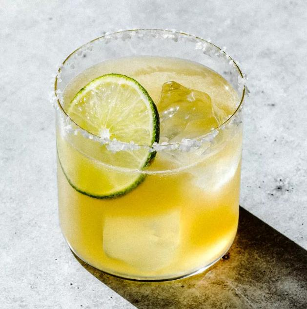

Margarita

Margaritas are a well-known tequila-based cocktail that are made up of only a few simple ingredients.
Margaritas can be served on the rocks or blended. The recipe below is best served on the rocks.
Leave your reposados and anejos on the top shelf when mixing margaritas. Unaged blanco or silver tequila is best, with its bright and crisp flavors. Quality is still key - ideally, use a blanco made from 100% blue agave.
Ingredients:
- 2 ounces of blanco tequila
- 1/2 ounce of orange liqueur
- 1 ounce of fresh squeezed lime juice
- 1/2 ounce of agave syrup
- Kosher salt for garnish
- Lime wedge for garnish
How to prepare:
- Salt the rim of a rocks glass with the kosher salt
- Add tequila, lime juice, orange liqueur, and agave syrup into a cocktail shaker filled with ice
- Shake until well-chilled
- Strain into the salted rocks glass over fresh ice
- Garnish with a lime wedge
- Enjoy!
Return Home